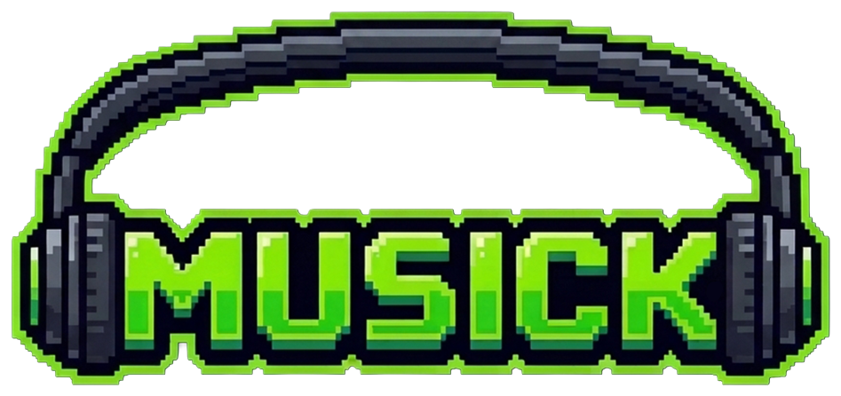

by SertAyListeler bir katalog olarak önde. Kaynak, şarkı sayısı ve etkin liste bilgisi aynı yerde; sağ üstte tek bir aktarım eylemi.
İstek kuyruğu boşaldığında havuzdaki parçalar çalar. Yeni bir izleyici isteği geldiğinde tekrar kuyruğa geçilir.
Her komutun durumu, izin verilen roller ve bekleme süresi aynı satırda. Rol düğmelerini örnek üzerinde değiştirebilirsin.
| KOMUT | GÖREVİ | ROLLER | BEKLEME | DURUM |
|---|
Önizleme merkezde; özelleştirme seçenekleri yanında. Bu çizim mevcut OBS katmanlarına uygulanmaz.
Uygulamadaki mevcut kişiselleştirme seçeneklerinin bu yerleşime taşınması öneriliyor.